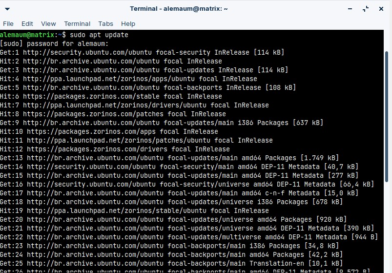
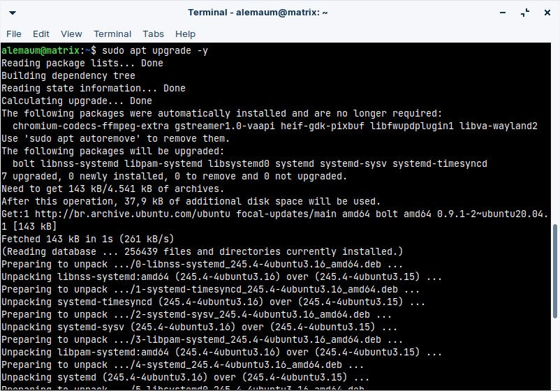
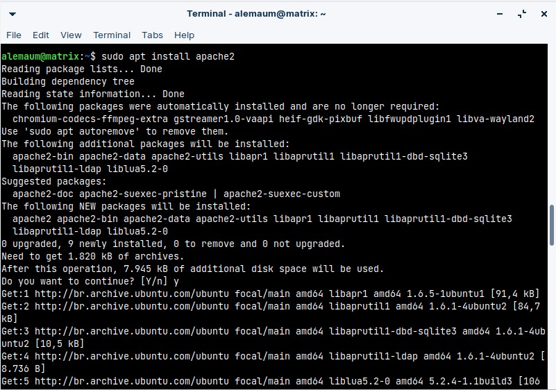
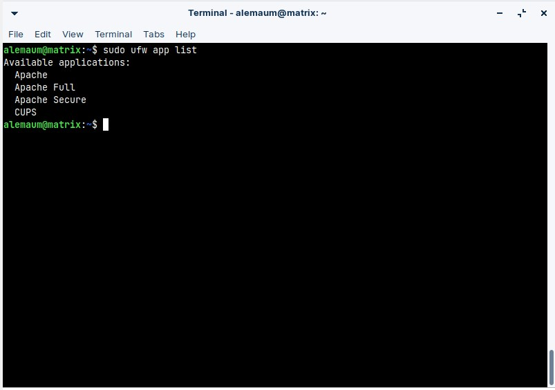
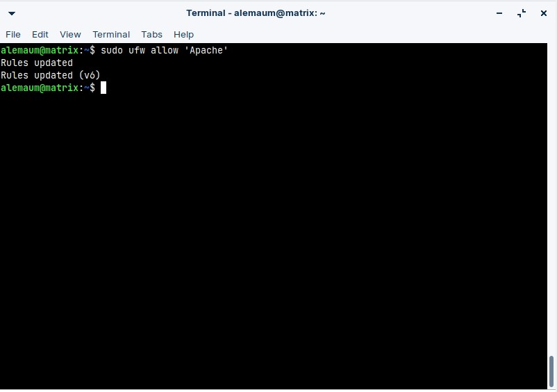
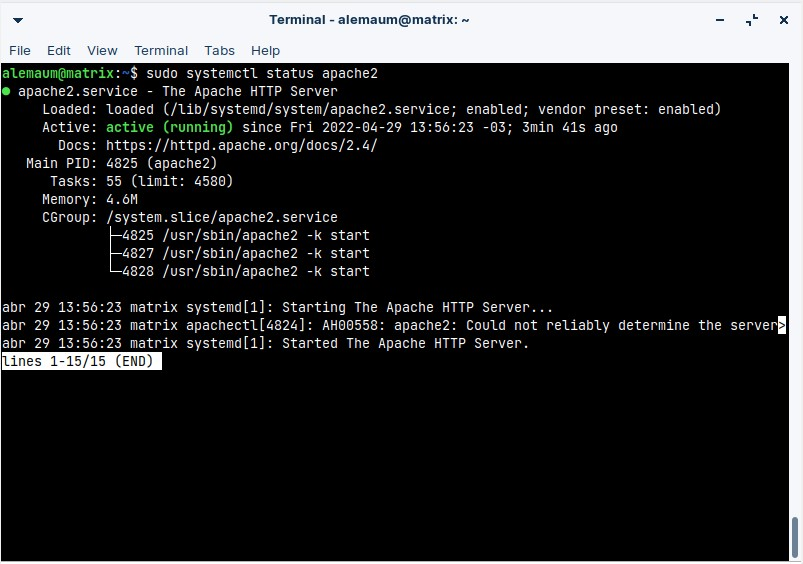
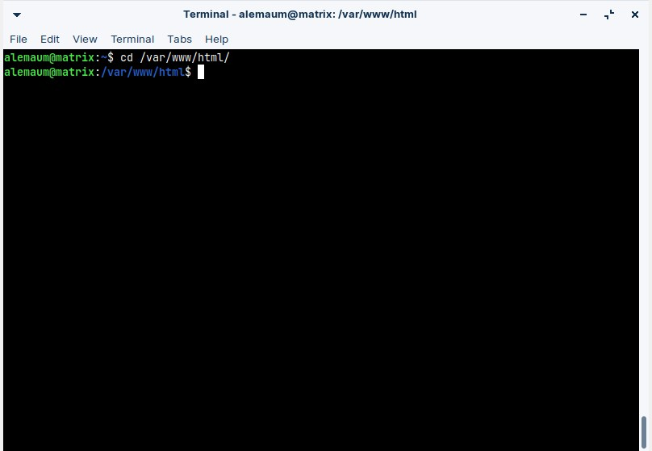
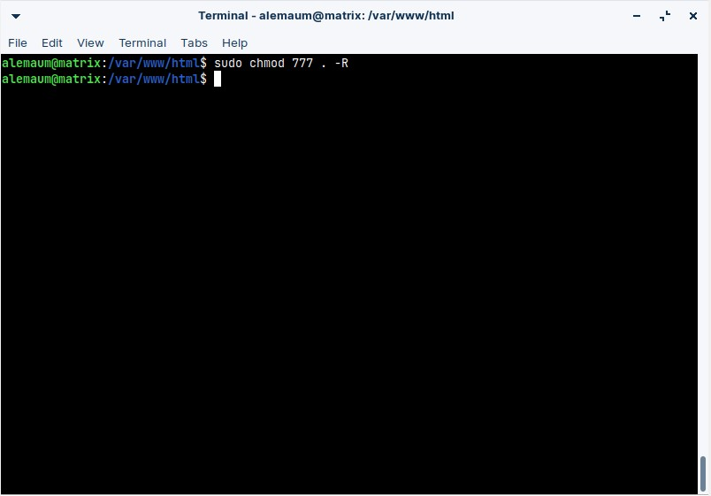
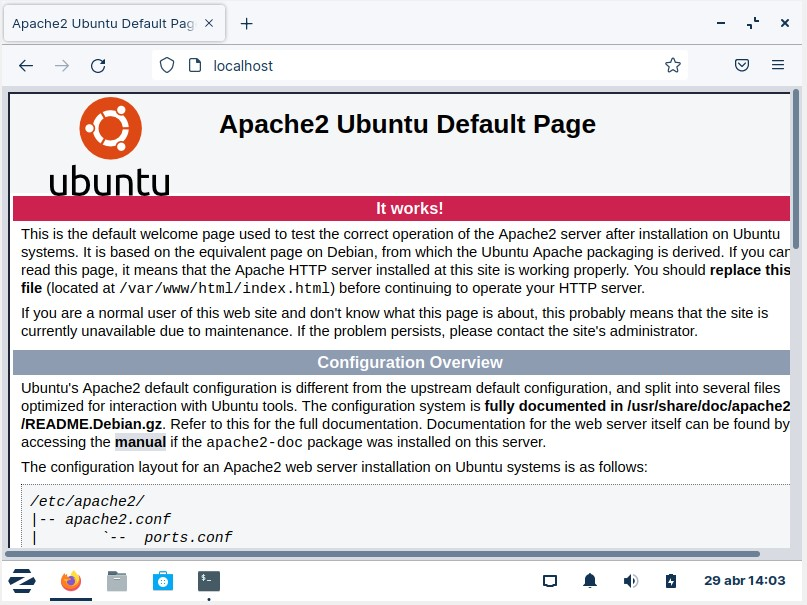

Essa telinha que se abriu é a tela de comando. Esse é o módulo do sistema que te proporciona acesso a qualquer funcionalidade aqui contida, desde que seja por linha de comando. É por aqui que iremos instalar pacotes, realizar configurações e criar nosso servidor.
E agora veremos cada um dos comandos e para que cada um deles serve. Note que, ao digitar “sudo”, o sistema vai pedir a sua senha de administração, isto é, a senha que você usa para desbloquear o seu PC ao entrar. “Sudo” nada mais que uma abreviação para “Super User Do” (super usuário, faça!).
> sudo apt update

Esse comando vai garantir com que todos as listas de pacotes mais recentes estejam disponíveis para que possamos baixar e instalar em nossa máquina.
> sudo apt upgrade –y

Esse comando vai instalar atualizações para todos os pacotes que possuam uma nova versão disponível. A flag –y apenas está presente para que a pergunta de “Você tem certeza” seja respondida com “sim” diretamente.
> sudo apt install apache2

E aqui temos o comando que vai instalar, de fato, o pacote primordial ao nosso servidor. Apache é um motor que transforma nossa máquina em um pequeno servidor local, a partir daqui já avançamos um grande passo, já que restam apenas leves configurações para que já possamos começar nosso projeto.
> sudo ufw app list

Com esse comando, temos acesso à lista de apps que fazem uso do firewall do nosso sistema operacional. São os apps que precisam de permissão dessa ferramenta que que possam realizar a comunicação com outros dispositivos na rede.
Ao rodar esse comando, veremos na lista o pacote que acabamos de instalar, que é o Apache. Esse item precisa de acesso pelo firewall, para que possa proporcionar a comunicação do nosso PC, à rede. Portanto, o próximo passo, vai ser liberar o seu acesso.
E, para completar, “UFW” nada mais é que uma sigla, novamente, para “Uncomplicated FireWall”
> sudo ufw allow 'Apache'

Aqui liberamos o pacote “Apache” para que possa se comunicar através do Firewall. Caso o pacote em questão esteja nomeado com qualquer outro nome, basta substituir “Apache” pelo nome que apareceu na lista de pacotes, no comando que rodamos anteriormente.
> sudo systemctl status apache2

Comando para verificar o status do serviço do Apache no sistema. É com esse comando que a gente pode saber se o serviço já está ativo, se ocorreu um erro, se ainda tem que ser feito algo e assim por diante. Systemctl é o módulo do sistema que é responsável pela administração dos serviços do sistema, quais deles iniciam ao ligar o PC, quais continuam ativos no fundo, dentre outras funções. É um pacote que já vem com o sistema e é muito importante para o funcionamento deste.
> cd /var/www/html/

Acesse a pasta do servidor, que foi criada automaticamente na instalação do pacote apache2. É aqui dentro que todos os seus projetos e arquivos irão ficar, para assim podermos deixá-los no servidor.
> sudo chmod 777 . -R

E, por fim, dê o comando para dar autorização total para a pasta, assim você pode fazer o que quiser com seus arquivos e pastas, podendo criar, editar, apagar e move do jeito que você quiser.
Após colocar seus projetos ali, vá até seu navegador e pesquise pelo endereço localhost. Se ocorreu tudo bem, seu projeto ou site aparecerão ali.
